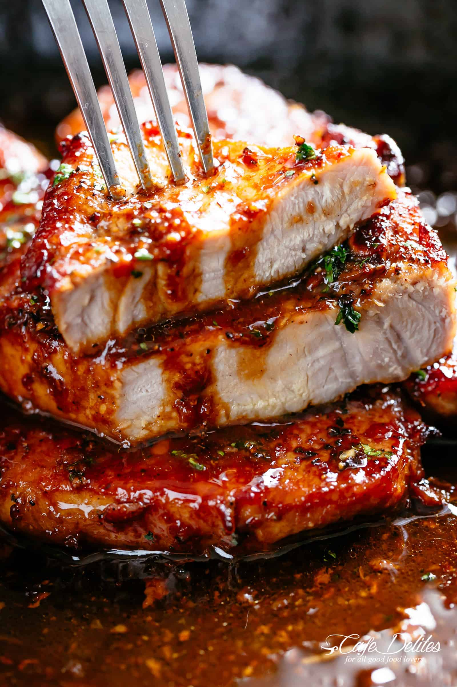

Honey Garlic Pork Chops

The demand for this recipe has been overwhelming! Since publishing my Easy Honey Garlic Chicken recipe years ago, the amount of emails coming in asking for a pork chops version has been crazy! Crazy GOOD because this recipe is one of the best pork recipes we’ve ever had. Delicious, juicy and tender chops that melt-in-your mouth.
All done in a skillet or oven-proof pan then finished off under the broiler (or grill) for a couple of minutes to get those crisp edges. That last step is so worth it! Just look at the colour! You will not regret serving these Honey Garlic Pork Chops to your family!
Ingredients
- 4 pork chops bone in or out
- Salt and pepper, to season
- 1 teaspoon garlic powder
- 2 tablespoons olive oil
- 1 tablespoon unsalted butter
- 6 cloves garlic, minced
- 1/4 cup honey
- 1/4 cup water (or chicken broth)
- 2 tablespoons rice wine vinegar (or apple cider vinegar, or any white vinegar)
Instructions
- Preheat oven broiler (or grill) on medium-high heat. Season chops with salt, pepper and garlic powder just before cooking.
- Heat oil in a pan or skillet over medium high heat until hot. Sear chops on both sides until golden and cooked through (about 4-5 minutes each side). Transfer to a plate; set aside.
- Reduce heat to medium. Melt butter in the same pan, scraping up any browned bits from the bottom of the pan. Sauté garlic until fragrant (about 30 seconds). Add the honey, water and vinegar. Increase heat to medium-high and continue to cook until the sauce reduces down and thickens slightly (about 3-4 minutes), while stirring occasionally.
- Add pork back into the pan, baste generously with the sauce and broil/grill for 1-2 minutes, or until edges are slightly charred.
- Garnish with parsley and serve over vegetables, rice, pasta or with a salad.
*******************************
Got curious, want to know more recipes? Check below!